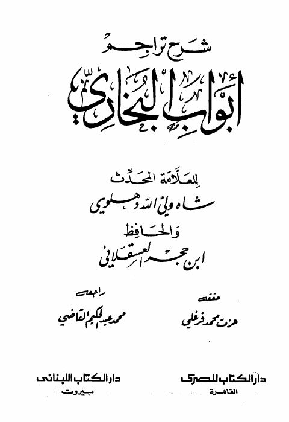

Downloads need an internet connection.
شرح تراجم أبواب البخاري
Authors: أحمد بن علي بن حجر العسقلاني ولي الله الدهلوي
Editors: محمد عبد الحكيم القاضي عزت محمد فرغلي
Publishers: دار الكتاب اللبناني دار الكتاب المصري
**▫️ العنوان: شرح تراجم أبواب البخاري** ▪️ المؤلف: #شاه_ولي_الدين_دهلوي_والحافظ_ابن_حجر_العسقلاني ▫️ المحقق: #عزت_محمد_فرغلي • #محمد_عبد_الحكيم_القاضي ▪️ الناشر: #دار_الكتاب_المصري • #دار_الكتاب_اللبناني ▫️ بلد النشر: القاهرة، #مصر • بيروت، #لبنان ▪️ الطبعة: 1 ▫️ عدد الأجزاء: 1 ▪️ الصفحات: 471 ▫️ نوع الوعاء: #كتاب ▪️ التصنيف الرئيسي: #التراجم_والأعلام ۪